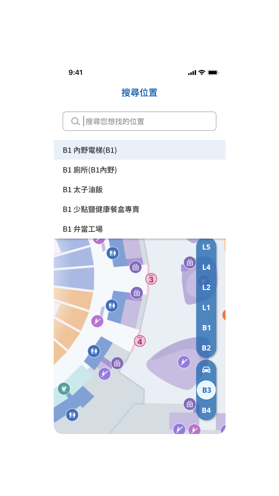
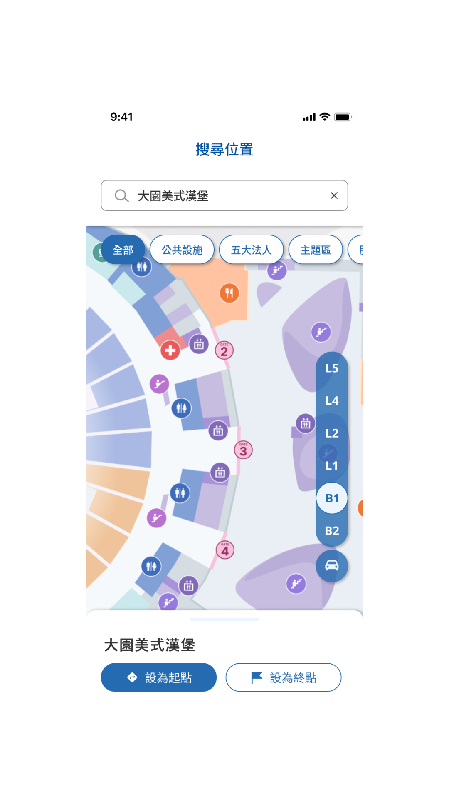
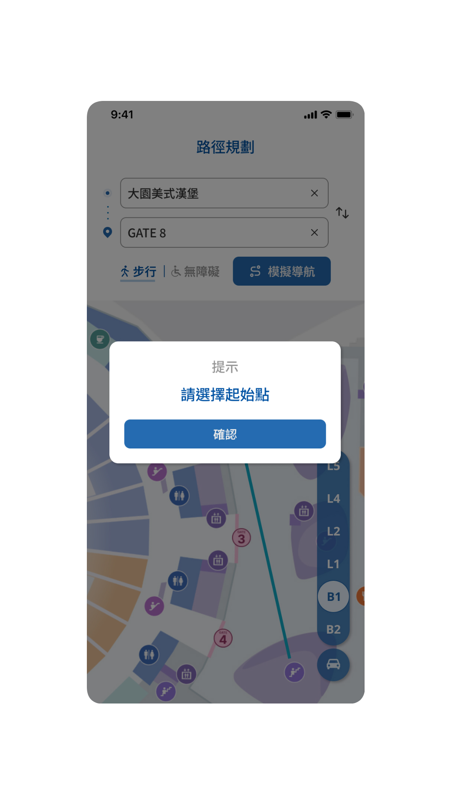
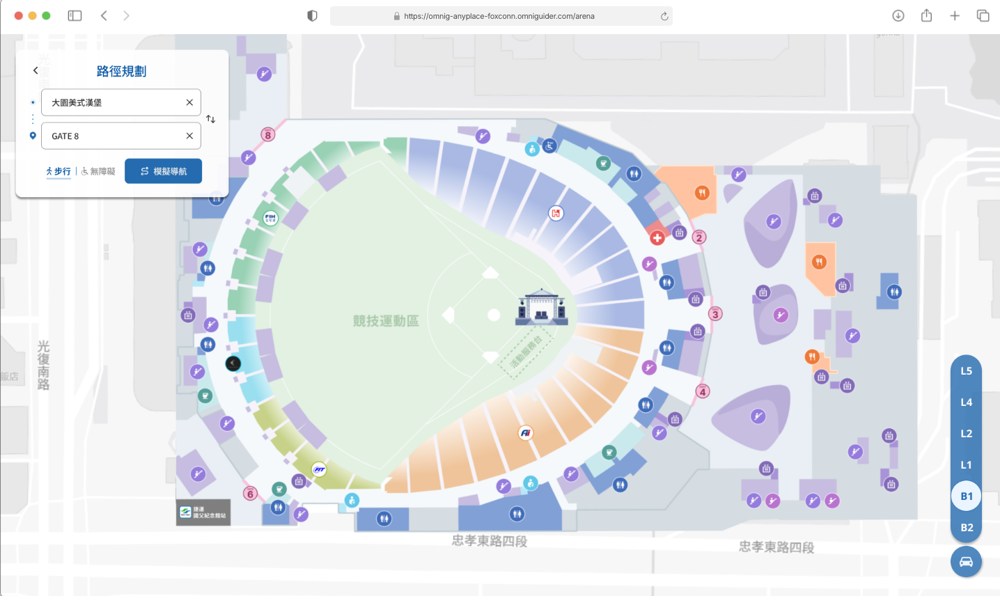
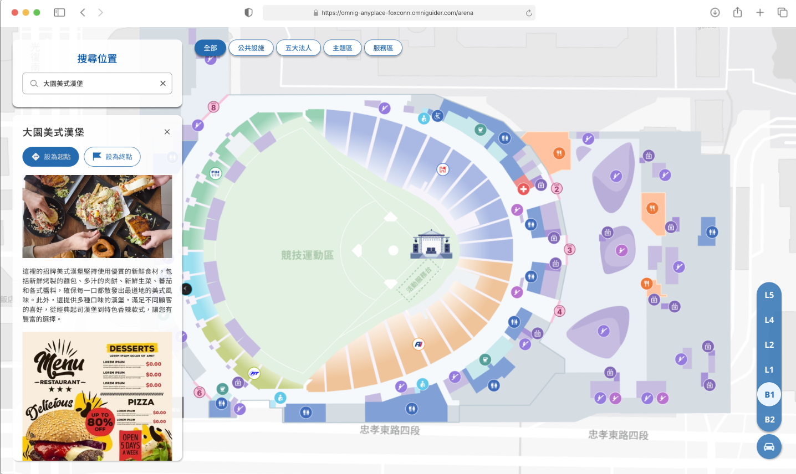
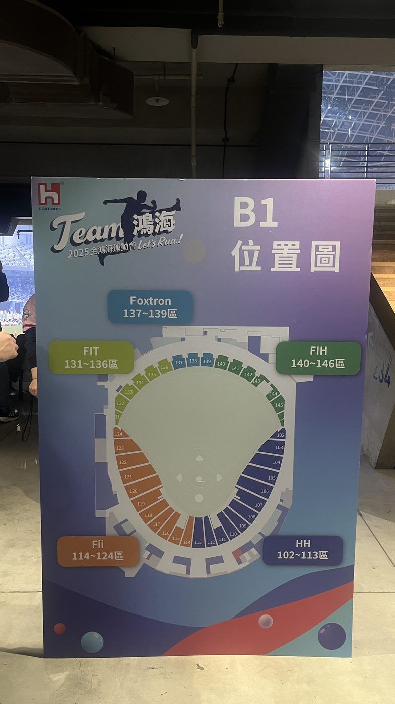

← BACK TO ARCHIVE
MOBILE APP · WAYFINDING · LARGE-SCALE · 2025
2025 Foxconn Carnival
VISIT LIVE SITE ↗
Served 35,000 employees and family members. An annual carnival navigation app for Foxconn Technology Group, embedded directly inside the group's internal employee app. Designed accessibility-first, I independently owned the full mobile design cycle — from information architecture and user flow to high-fidelity UI — so everyone in a large, complex venue could find their way with confidence.
The Taipei Dome has many floors and interlocking circulation paths, and event-day crowds are dense. Employees and family members — including elderly attendees and children — all needed a wayfinding experience they could understand at a glance, while accessibility needs had to be built in from the start, not bolted on.
I led the user journey planning and interface spec, building a color-coded department zoning system and a shared component library that simplified a genuinely complex venue information architecture into a visual language people could read at a glance — and kept the navigation experience consistent between the app and the web version. Since most of the Dome's on-site circulation is stair-based, I built a "walking / accessible" dual-mode toggle directly into route planning, so wheelchair users get a dedicated accessible path — accessibility wasn't a feature bolted on, it was a core design constraint running through the whole system.
The app served over 35,000 users, carrying the on-site navigation load for Foxconn Technology Group's flagship annual carnival. It also left behind a reusable, extensible large-venue navigation design system for future events of the same scale.
From route planning to cross-floor navigation — the actual mobile and web screens from the Foxconn Carnival navigation app, including the "walking / accessible" dual-mode toggle.








Web version · Full venue map of the Taipei Dome

Web version · Walking / accessible dual-mode toggle

Web version · POI detail information card
On January 24, 2025, Foxconn Technology Group held its annual carnival at the Taipei Dome for the first time. Photos from the live event, plus a walkthrough recording of the system in real use.
 Taipei Dome event grounds · 35,000+ attendees
Taipei Dome event grounds · 35,000+ attendees

B1 floor zone location signage Team Foxconn · on-site cheer lightstick
Team Foxconn · on-site cheer lightstick